Snap! Crash Course
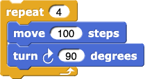 Once you've learned how to program in one language (at least any language that your AP Computer Science Principles class would have used), it's much easier to learn another language. And Snap! will be especially easy to pick up quickly because it's all visual; you just snap blocks together, and you don't have to worry about any syntax (parentheses, commas, semicolons, quotation marks, etc.).
This page is designed to get you up and running in Snap! as quickly as possible. It will help you pick up Snap! quickly if you take the time to read (or at least skim) this whole page. Click the links below to learn about each topic.
Getting Started in Snap!
Important Links
- snap.winna.er/run – Snap! programming environment (the most important link)
- Snap! Cheat Sheet – shows how each procedure on the AP CSP Exam Reference Sheet looks and is used in Snap!
-
Snap! Reference Manual – many more details about Snap!
than this brief crash course; you can also access this by clicking the Snap! logo in the
upper left corner of any Snap! window:
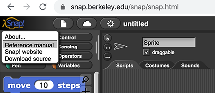 - snap.winna.er – Snap! community website with example projects, shared projects, and an online forum where Snap! programmers connect
Creating a Snap! Account
You may want to create a Snap! account so you can save and access all your Snap! projects in the cloud. (You don't need an account; you could save all your Snap! projects on your own computer and drag them onto a Snap! window to load them.) Instructions for creating an account and logging in to and out of your Snap! account are in the first lab of the Beauty and Joy of Computing CSP curriculum:
Saving and Loading Snap! Projects
To save a project, choose "Save" from the Snap! File menu,  (or
press control-s).
(or
press control-s).
To load a project, choose "Open..." from the Snap! File menu (or press control-o), select the project you wish to open, and click "Open." Always remember to save the project you were working on before opening a new one.
The Snap! Interface
![image of the snap interface with the toolbar at the top labeled 'Tool Bar'; the palette running down the left side labeled 'Palette' and several of the blocks inside the palette labeled 'Blocks'; the central column (with a pair of blocks snapped together) labeled 'Scripting Area'; the white rectangle in the upper right but below the toolbar labeled 'Stage' and the arrowhead in the center of the stage saying 'Hello World!' labeled 'Sprite'; the gray rectangle in the lower right below the stage (which contains small copies of both the sprite and the stage) labeled 'Sprite Corral'](./crash_course_files/interface.jpg "image of the snap interface with the toolbar at the top labeled 'Tool Bar'; the palette running down the left side labelled 'Palette' and several of the blocks inside the palette labelled 'Blocks'; the central column (with a pair of blocks snapped together) labelled 'Scripting Area'; the white rectangle in the upper right but below the toolbar labelled 'Stage' and the arrowhead in the center of the stage saying 'Hello World!' labelled 'Sprite'; the gray rectangle in the lower right below the stage (which contains small copies of both the sprite and the stage) labelled 'Sprite Corral'")
-
The Toolbar includes several menus, stage control buttons, and project control
buttons.
Click here to learn more
about the buttons in the toolbar.
- The Snap! menu, , where you can find the detailed Snap! Reference Manual
- The File Menu, , for loading and saving projects
and loading libraries and sprite costumes and sounds
- The Cloud menu,
 , for logging in/out and changing
your Snap! password
, for logging in/out and changing
your Snap! password - The Settings menu, , for controlling the Snap! interface
- The Visible Stepping button, 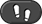, for debugging your code by running it slowly or even one block at time
- The Resize Stage button, , for controlling the size of the stage
- The Presentation Mode button, , for switching between seeing a project code beside the stage (as shown at right) and seeing only the stage (presentation mode)
- The Green Flag button, , which starts any blocks that begin with a block
- The Pause button, , which pauses the running of your code
- The Stop button,
 , which stops all scripts in your project
, which stops all scripts in your project
- 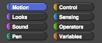 The Palette area includes eight menus (the palette category selector buttons are shown at right), where you will find all the blocks (procedures) in your project (built-in blocks, imported blocks, and custom blocks). Blocks appear in the palettes matching their color (except red and gray blocks which are in the orange "Variables" palette).
- The Stage is what users of your project see. One or more sprites
(characters) live on and can talk and move around on the stage. Sprites begin with an arrowhead
costume (as shown in the picture of the Snap! interface), but you can change a sprite's
costume (the picture that it wears) by choosing "Costumes..." the Snap! File menu ().
- The Scripting Area is where you drag blocks from the palette and snap them together to build your code. Above the scripting area are three tabs that allow you to view and edit the Scripts, Costumes (or Backgrounds), and Sounds for the sprite (or the stage) that you have selected in the "Sprite Corral."
- The Sprite Corral lets you select the sprite (or the stage) you want to work with (either to write or to view code; to control the costumes or background; or to select, import, and record sounds).
Sharing Projects
There are two primary ways to share your Snap! projects: sending an XML file containing a copy of your project; and creating a link to your active project file.
-
Exporting an XML file: If you send someone an XML copy of your project, they will
have a snapshot of your work at that day and time; if you make changes to your project, their copy
will not change. (If they make changes to their copy, your project won't change.) To create an XML
file, choose "Export project..." from the Snap! File menu (),
and an XML file will download to your computer that you can share with others. They can then import
that file in Snap! to see your project.
- Importing an XML file: The recipient must either drag the XML file into the Snap! window or choose "Import..." from the Snap! File menu and locate the file on their computer. Importing a project will close any project that is open in that Snap! window.
-
Creating a link: If your project is saved in the Snap! cloud, you can
"Share" it, which will make a URL (link) to your project. If you email someone that link, then they
will be able to see your project and any changes that you make to it in the future (unless you
"Unshare" it). They can't edit your project, but they can save a copy to their Snap!
account and edit that. To create a link:
- Make sure your current project is saved, and then open the project you want to share.
- Then choose "Open..." from the File menu again, and select the project you want to share from the project list.
- Click "Share," and then click "Yes" to share. Then click "Cancel" to close the menu.
-
The URL (the link) at the top of the browser window will have changed. Copy this new URL,
and send it to someone else to share the project. Click for images
that show where the URL is and how it changes.
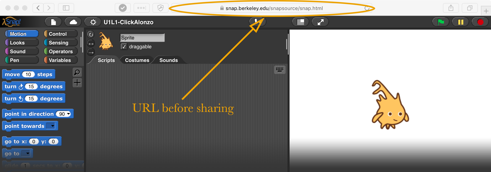
-
"Unsharing" a link: If you want an existing link to your project to stop working
for other people, you can "unshare" it. To "unshare" a link:
- Choose "Open..." from the File menu , and select the project you want to unshare from the project list.
- Click "Unshare," and then click "Yes" to unshare. Then click "Cancel" to close the menu.
Code-Building Basics
Creating Scripts
In Snap!, you drag and attach blocks together to create your scripts. You can learn more about a particular block by right-clicking it (or control-clicking it on a Mac) and selecting "help..." which will bring up a little window with information about how the block works. You can also just click a block to see what it does. Click for an example of accessing the Help menu for a pen block.
Every script you build in Snap! belongs either to a sprite or to the stage. Identifying words
in block names such as "I" or "my" refer to that sprite or to the stage (depending on which one is
selected in the sprite corral):
Some blocks have little arrows that allow to you to control the inputs:
-
Downward pointing arrows (▼) indicate
drop-down menus with additional options:
If the downarrow is in a white box, as in theitemblock above, you can either choose from the menu or type your own value into the box. If the box is block-colored, you can only use the choices in the menu. -
Left/right arrows (◀ ▶) indicate that you
can control the number of input slots:
Block Shapes: Procedures and Events
There are several different block shapes in Snap!, and they each have their own meaning and places they can be used:
-
Commands have a rectangular, jigsaw-puzzle-piece shape. These are instructions that tell
the computer to do something. They are designed to be snapped together one below another. Here are a
few command procedures:
-
Reporters have a rounded shape. These blocks report (return) a value. They can either be
clicked to report a value to the programmer or be dropped into an input slot of another block, in
which case they report a value to that other block. Here are a few reporter procedures and their
current output values:
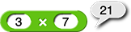 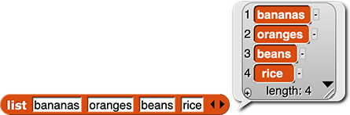-
Predicates have a hexagonal shape. They are are a special kind of reporter that
only reports
trueorfalse. They are used inside other blocks to help a program decide when to do something or what to report. Here are a few predicate procedures:
And here are a few blocks that take Booleans (trueorfalse) as input:
-
Predicates have a hexagonal shape. They are are a special kind of reporter that
only reports
-
Hat blocks have a hat shape on top and a puzzle-piece shape at the bottom. They detect an
event such as clicking on the sprite, pressing a key, or clicking the green flag button (). They can only go at the beginning of a script, and they tell rest
of that script to run when that event occurs. (Not every script needs a hat block; you can also run
a script by clicking on it.) Here are a few hat blocks:
Communicating Between Sprites
Of course, you can use global variables (more about them below) to share information between sprites, but you can also send messages between your sprites or have one sprite tell another sprite what to do:
-
Sending messages: The
broadcastblock sends a message to all the sprites. To set the message, click the down arrow and select "new..."
Once that message has been sent out, any scripts in your project that begin with thewhen I receivehat block with that same message will run:
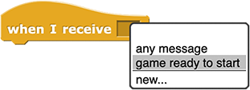 -
Telling sprites what to do: You can tell a specific sprite (or the stage) what to do by using thetellblock to send instructions (not just messages): 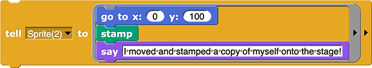 -
Asking sprites questions: You can ask a specific sprite (or the stage) a question using theaskblock to send an expression:
Creating Variables
There are several kinds of variables in Snap!. Here are the most important:
-
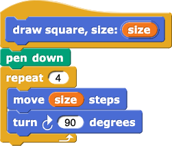
- Input variables (parameters) store the input values (arguments) passed to a custom
block. For example, size is an input variable to the
draw squareblock shown at right. There is more information about creating blocks with input parameters below. - Script (local) variables only exist within the script that creates them. You can
create script variables using the block. Place that block at the point in your code where you want
to create a variable. You can click a variable name in the
script variablesblock to change the name; you can click the right arrow (▶) to create additional variables at the same point in your program. To use a script variable, drag it from thescript variablesblock to wherever you want to use it (in the same script). -
Iteration variables change in value as a block repeats a set of commands. You can
change the name of an iteration variable by clicking on it. In Snap!, there are two
iteration blocks that have built in variables:
foruses i (unless you change the name) to hold the index number of the iteration, andfor eachuses item (unless you change the name) to hold each list item as it traverses (travels through) the list:
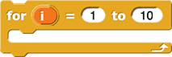 - Global variables can be accessed from anywhere in your program. You can create them by clicking the button in the Variables palette.
Because Snap! is a visual language (not a text-based language), you can use multi-word variable
names. It will be clear to you and others when reading the code that those separate words are all part
of the same variable name:
Creating Custom Blocks (Procedures)
To program your own block:
-
Create a new block. There are several ways to start: click near the end of the palette, click the + sign in the top
right corner of the palette (shown below), or right-click (or control-click on a Mac) on any empty
spot in the scripting area and choose "make a block..." (shown below).
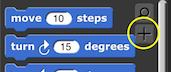 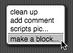 -
Choose the color (palette), type the title, select the
shape (block type), and click OK.
![image of 'Make a block' dialog box with palette with 10 menus (Motion, Looks, Sound, Pen, Lists, Control, Sensing, Operators, Variables, Other) labeled 'Choose a color (a palette)'; a text box labeled 'Type a title for your block.'; three block shape options (puzzle-shaped/'Command', oval/'Reporter', and hexagonal/'Predicate') labeled 'Select a shape.'; two radio boxes ('for all sprites', which is checked, and 'for this sprite only', which is not checked) with no label; and two buttons (OK and Cancel) labeled 'Click OK.'](./crash_course_files/make-a-block-labeled.png "image of 'Make a block' dialog box with palette with 10 menus (Motion, Looks, Sound, Pen, Lists, Control, Sensing, Operators, Variables, Other) labeled 'Choose a color (a palette)'; a text box labeled 'Type a title for your block.'; three block shape options (puzzle-shaped/'Command', oval/'Reporter', and hexagonal/'Predicate') labeled 'Select a shape.'; two radio boxes ('for all sprites', which is checked, and 'for this sprite only', which is not checked) with no label; and two buttons (OK and Cancel) labeled 'Click OK.'")
- Just as you can use multi-word variable names in Snap!, you can also use multi-word names for your custom blocks (procedures).
-
Program your block. Drag in blocks from the palette, snap them in after the hat
block, and click OK.
- Note that if you create a reporter or predicate block, the block editor will open with a
block already attached to the hat block. All of your block code will go
between these two blocks or inside the
reportblock; whatever input you give toreportwill be the value reported (returned) by your new block.
- Note that if you create a reporter or predicate block, the block editor will open with a
block already attached to the hat block. All of your block code will go
between these two blocks or inside the
Creating Custom Blocks with Input Variables (Parameters)
-
Create a new block, choose the color and shape, type the block name and a label for your
input, and click OK.
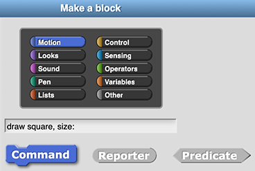 -
Click a plus sign (+) between (or before or after) the words in your hat block
where you want the input slot to appear. Then, type the name of the input, and
click OK.
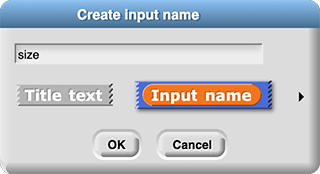- You can also add text to the name of the block by clicking a plus sign: Just change the option in the "Create input name" menu from "Input name" to "Title text."
-
If you can't see the plus signs, hover your mouse pointer over where they would be and they
will appear one at a time, or just turn off "Plain prototype labels" in the Snap!
Settings menu:
 symbols in block prototype labels'")
- Program your block, dragging in the input variable(s) wherever you need it (them).
Input Types
There are several kinds of input slots that tell the programmer what kind of data is expected:
- Number:
- List:
- Boolean:
- Group of commands:
- Any type:
You can chose the input type for the input variables in your custom blocks by clicking the right arrow
(▸) to the right of the "Input name" option in the "Create input name" window (as shown below). It's not
necessary to set an input type in Snap!. If you don't select one, your input slot will accept
any type of input.
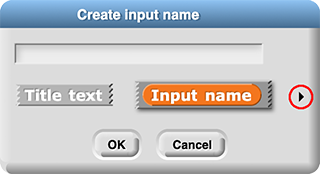
Grouping Data: Lists/Arrays/Etc.
myList[3]is .)
(called
filterin some other languages)
(called
reducein some other languages)
functionor
lambdain other languages. Instead of requiring a parameter name (the
(x)in many function definitions), Snap! just uses an empty input slot to indicate where the argument should be plugged in:
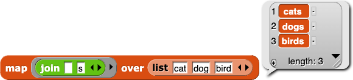
You can read about several other commonly used Snap! list blocks on the Snap!
Cheat Sheet page:
Some other common list functions aren't built into Snap!, but are available in a library: Select "Libraries..." from the Snap! File menu, and choose "List utilities" near the top of the list.
Python users can use Snap! lists to recreate the behavior of other data aggregates:
- A
tuple
is just a list that you don't modify. - A
set
is unordered; so just use a list and don't make any assumptions about order. Also, Python sets aren't supposed to include the same value more than once. So when you extend a set, useremove duplicatesfrom the Snap! "List Utilities" library. -
A
dictionary
is just a list of two-item lists. In each small list, the first item is the key and the second item is the value. In Snap!, this might look like:
In Snap!, you can useassocfrom the "List Utilities" library to search for a key-value pair and then useitem (2) ofto select the value.
Snap! Libraries
Snap! has libraries (collections of additional procedures) for many things, including lists, accessing data on the Internet, external devices, pen colors, audio, and maps. Click for an example of opening the "Words, sentences" library in Snap!
Exporting and Importing Procedures
You can export one or more blocks into an XML file on your computer, which you can then import into another project or share with another programmer for them to use.
To export:
- Open the Snap! project with the blocks you want to export, and choose "Export blocks..." from the Snap! File menu.
- Select only the block(s) you wish to export. You can either deselect the blocks you don't need exported, or you can right-click (control-click on a Mac) the background in the window, choose "none," and then select only the ones you want.
- Click "OK." An XML file will download.
To import:
- Open the Snap! project where you want to use the blocks from the XML file.
- To import, either drag the XML file into the Snap! window or choose "Import..." from the Snap! File menu and locate the file on your hard drive.
-
Test the blocks that you imported:
- Find the imported block(s) at the end of the palettes that contain them.
- Try each one to make sure it runs properly.
If you ever see this Obsolete! block (shown right) in code you have imported, it means that
a block used by the block you imported was not included in the export. You'll have to go back to the
original project and export again being sure to select all of the blocks needed by the blocks you want.
Recursion
Here's how to call a procedure from inside itself in Snap!:
- Create a new procedure, and click "Apply" in the Block Editor.
- Drag your new procedure out of the palette and use it in your block.
 levels and starting size (size #) {
repeat (3) {
move (size) steps
if (levels > 1) {
draw triangle fractal with (levels - 1) levels and starting size (size / 2)
}
turn right (120) degrees
}
}")
Makes this image:

draw triangle fractal with (4) levels block shown above:
Recursion also lets you traverse a list, just as for each does, but without the use of
index variables. Instead, you split the list into its first item and everything else:
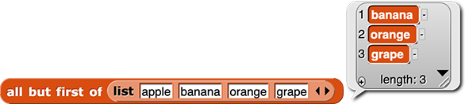
You compute some function of the first item, and combine that with a call to the same procedure you're writing, but on the smaller list that remains: 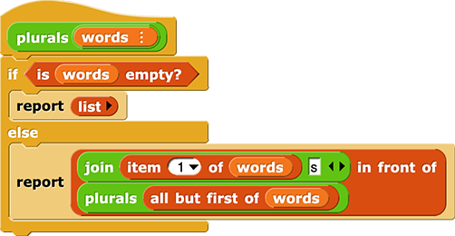 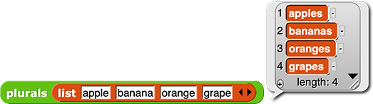
Debugging and Organizing Snap! Code
Slowing or Pausing Your Program
"Visible Stepping" allows you to control how quickly Snap! steps through the blocks of your code.
-
Running slowly: Click the Visible Stepping button (
 ), and adjust the slider to control the
stepping speed. When you run your code, the sprite will slowly execute each block and highlight it
in cyan. Click for an example of
adjusting the Visible Stepping slider.
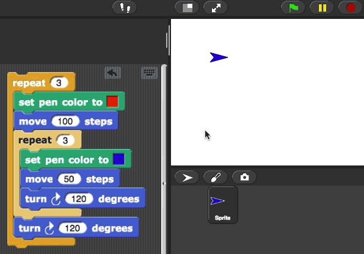
), and adjust the slider to control the
stepping speed. When you run your code, the sprite will slowly execute each block and highlight it
in cyan. Click for an example of
adjusting the Visible Stepping slider.
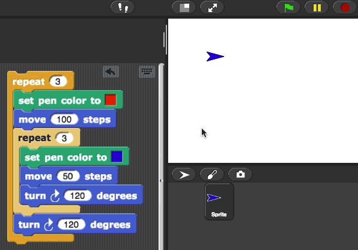 -
Stepping inside a custom block: To use visible stepping to see the code
inside one or more of your custom blocks, follow these steps in order:
- Turn on visible stepping
- Open a Block Editor window for each block you want to watch
- Start your program
-
Running one step at a time: You can slow the stepping to only one step at a time,
and Snap! will wait for you to tell it to go on to the next step. Move the slider all the
way to the left, and then you can press the Run/Pause button () to advance through each step of your code. Click for an example of
single-stepping through code.
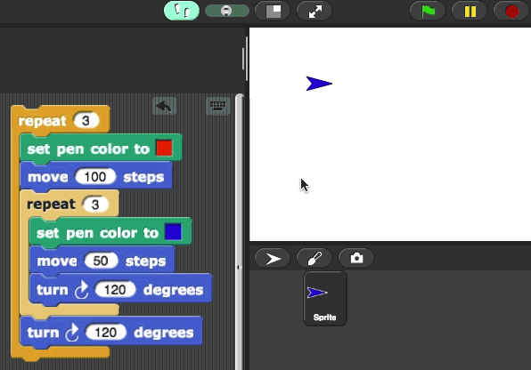
Visible stepping can be useful as you read someone else's code because you can watch it run at human speed instead of computer speed. It's also useful in debugging your own code when something goes wrong.
You can also use to place breaks in your code. When your program reaches this block,
every script that is running will pause until you click the yellow Run button ().
Click for an example of using
pause all.
Viewing Values While Your Code Runs
There are several ways to see the value of variables and sprite attributes while your code is running:
- Clicking on a reporter will make it report its value.
- Checking the checkbox next to a variable or reporter in the palette () will display a watcher on the stage that allows you to monitor how the value changes.
- The block displays a watcher on the stage, which is useful for script variables since they aren't shown in the palette.
-
Right-clicking on a script that's running shows a menu with extra options to
display watchers for each currently existing script variable. Click for an example of
showing temporary variable watchers.
' watcher on the stage.")
You can also use the block to get information about the state of your program while it's running. Click for an
example of using say for to debug a rectangle drawing script.
Tidying Up Your Code
One way to avoid having bugs in your program in the first place is to keep your code organized:
- You can clean up your scripting area by right-clicking (or control-clicking on a Mac) the scripting area and selecting "clean up." This will reposition the scripts so they don't overlap.
- You can remove a script from your project by dragging it out of the scripting area and into the palette. (If you drag a block out of the middle of a script, that block and all the ones below it will be removed; the part of the script above that block will remain.)
- You can delete a single block from a script by right-clicking (or control-clicking on a Mac) that block and choosing the "delete" option. (Note that removing a block or script from your scripting area is different from the "delete block definition" option which will permanently delete a custom block and all its instances from your entire project.)
- You can delete all the unused blocks from your project by selecting "Unused blocks..." from the Snap! File menu. This allows you to permanently delete custom or imported blocks that aren't being used by your project. This is often helpful when you've loaded a library but you only need one or two blocks from that library. (More about libraries below.)
Commenting Your Code
You can add comments to your Snap! code by right-clicking (or control-clicking) in the Scripts area and choosing "add comment." Click for an animation that shows how.
You can create a help message for your block by attaching a comment to the hat block in the Block Editor. Then people using your block can find out what your block does without having to look inside. These work just like the help messages for built-in blocks.
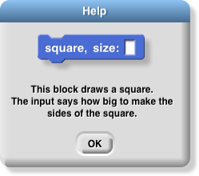
Learning More
You can learn more about programming with Snap! on the Snap! Cheat Sheet, by reading some of the very thorough Snap! Reference Manual, or by connecting with other Snap! programmers on the Snap! community website.
There is also a "find blocks button" in the palette in case you are thinking of a block you
can't find:
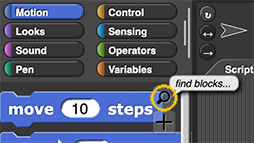